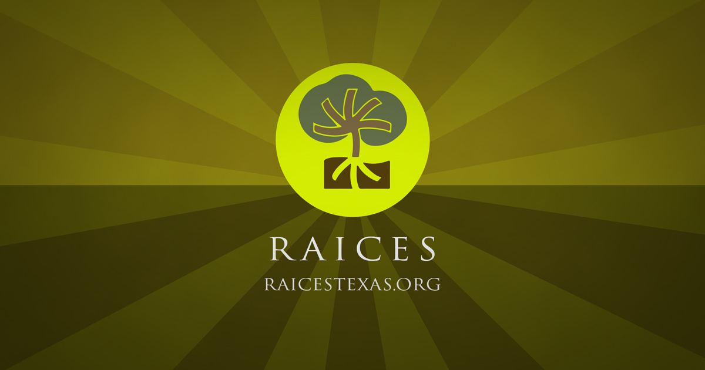
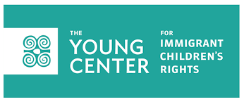
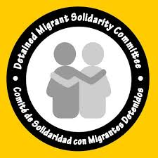

Take Action
Throughout the nation, including the state of Texas, are a variety of organizations that advocate for the rights of immigrants and which to provide any necessary needed resources and sanctuary. Below are a few of the many organizations that receive donations to help make these goals a reality.
Donate here!
The Texas Civil Rights Project is an organization of texas lawyers who come together and work to advance the rights of minorities, such as immigrants. They also have projects focused on criminal justice voting rights, and economic rights.

Donate here!
The Texas Civil Rights Project is an organization of texas lawyers who come together and work to advance the rights of minorities, such as immigrants. They also have projects focused on criminal justice voting rights, and economic rights.

Donate here!
Young Center for Immigrant Children's Rights focuses on the children first. It works to prioritize serving the children as soon as they enter the country assisting in advocating their rights, and an overall immigration and implementing system that protects children’s rights.

Donate here!